Git 설치
https://git-scm.com/ 에 접속하여.
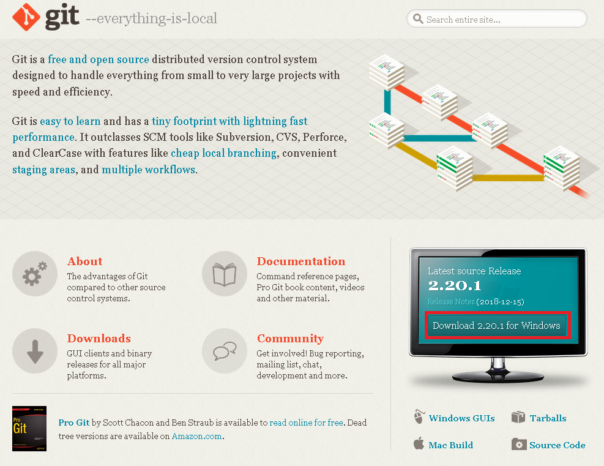
빨간색으로 표시한 Download 뭐시기어쩌구를 클릭한다.
그러면 Install 프로그램이 다운로드 된다.
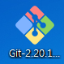
다운받은 Install 프로그램의 아이콘을 더블클릭한다.
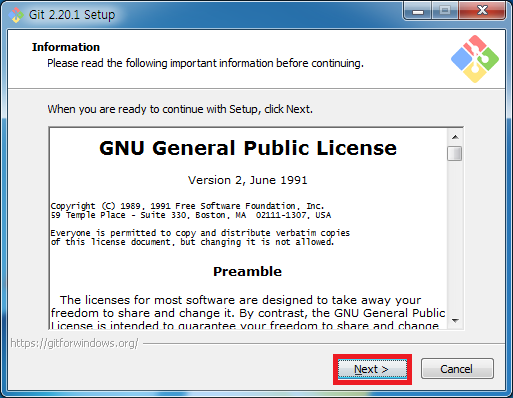
Git은 GPL v2 라이센스를 따른다.
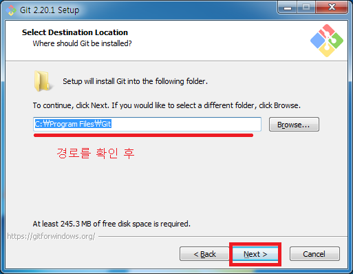
설치하고 싶은 경로를 설정해준 후 Next
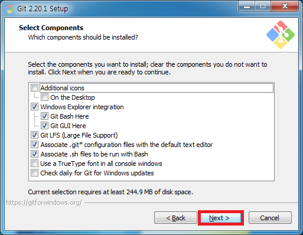
기본 설치 옵션이 최고다.
Next
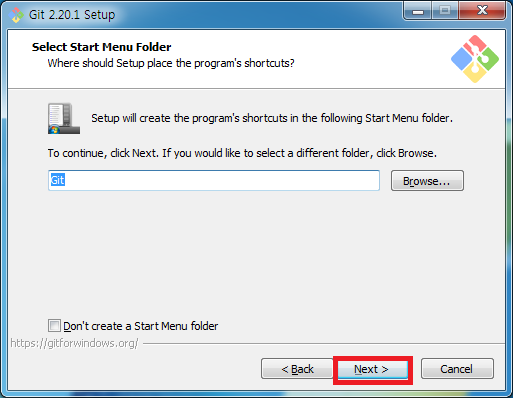
Next
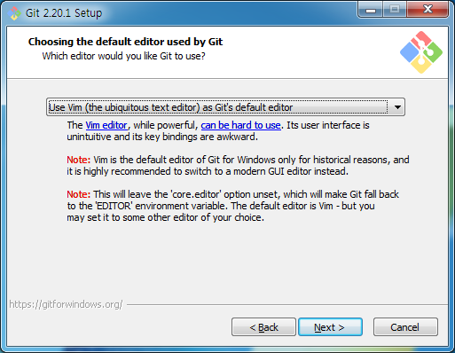
Git에서 사용할 기본 에디터를 설정하는 창이다.
나중에 rebase나 commit들을 수정할 때 사용하게 되니 자신이 편한 에디터를 선택해주면 된다.
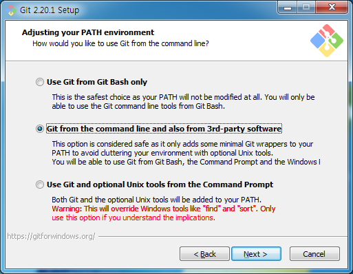
Next
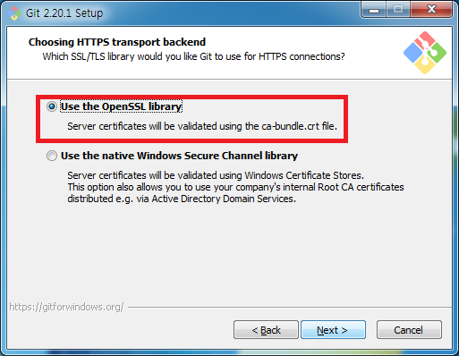
OpenSSL을 사용하자
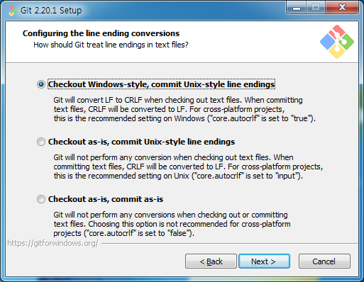
line ending style을 골라주면 된다.
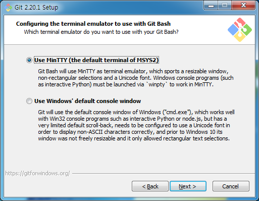
Git Bash가 돌아갈 기본환경 설정이다.
보통 MinTTY를 많이 사용한다.
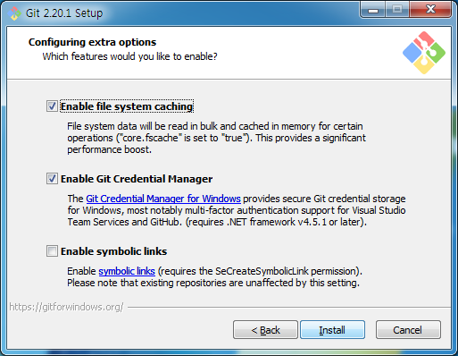
Next
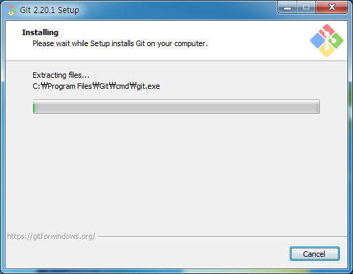
설치중...
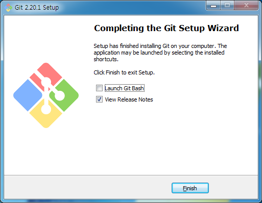
완료